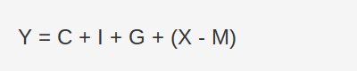
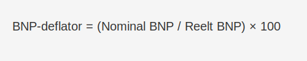

Bruttonasjonalprodukt (BNP) er verdien av alle ferdigstilte varer og tjenester produsert innenlands i en gitt periode, vanligvis ett år. BNP er en nøkkelindikator for å måle økonomisk vekst, konjunktursvingninger og bedrifters inntektsmuligheter.
For en bredere forståelse av de makroøkonomiske prinsippene bak BNP, se vår artikkel om Makroøkonomi.
Hva inngår i BNP?
BNP kan beregnes ved tre hovedmetoder:
| Metode | Beskrivelse |
|---|---|
| Produksjonsmetoden | Summerer verdien av alle produksjonsaktiviteter i økonomien. |
| Inntektsmetoden | Summerer alle inntekter (lønn, renter, profitt, skatt). |
| Utgiftsmetoden | Summerer alle utgifter (konsum, investering, offentlige kjøp). |
Komponenter i utgiftsmetoden
Utgiftsmetoden zoomer inn på hvordan BNP er sammensatt av ulike typer utgifter:

| Symbol | Komponent |
|---|---|
| C | Privat forbruk |
| I | Bruttoinvesteringer |
| G | Offentlige utgifter |
| X | Eksport |
| M | Import |
Real vs Nominal BNP
- Nominal BNP måler verdien av varer og tjenester til løpende priser.
- Reelt BNP justeres for prisendringer (inflasjon), og gir et mer nøyaktig bilde av den faktiske volumveksten.
BNP-deflatoren
BNP-deflatoren måler det generelle prisnivået i økonomien ved å sammenligne nominal BNP med reelt BNP.
BNP-deflator (%) = (Nominal BNP / Reelt BNP) × 100

BNP-deflatoren brukes til å justere for inflasjon og få en helhetlig prisindikator som dekker alle varer og tjenester i BNP.
Se også Hva er Inflasjon?.
BNP per innbygger
BNP per innbygger gir en indikasjon på levestandard.
| År | BNP (milliarder NOK) | BNP per innbygger (NOK) |
|---|---|---|
| 2018 | 3 500 | 660 000 |
| 2019 | 3 600 | 675 000 |
| 2020 | 3 550 | 670 000 |
| 2021 | 3 700 | 695 000 |
Hvorfor er BNP viktig for regnskap?
- Økonomisk styring: BNP gir innsikt i konjunkturutsvinger, og påvirker budsjettering og likviditetsplanlegging.
- Sammenligning: Muliggjør benchmarking av bedriftens vekst mot nasjonalt nivå.
- Analyse: Kombinert med nøkkeltall som egenkapitalrentabilitet og likviditetsgrad gir BNP et helhetlig bilde av økonomisk helse.
BNP og konjunktur
BNP er en av de viktigste konjunkturindikatorene som viser om økonomien er i ekspansjon eller resesjon. Les mer i Hva er Konjunktur?.
Begrensninger ved BNP
Selv om BNP er en sentral indikator, har måltallet flere begrensninger som er viktige å kjenne til:
- Ikke-registrert økonomi – Svart økonomi og uformell virksomhet fanges ikke opp.
- Fordelingsaspekter – BNP sier ikke noe om hvordan inntektene fordeles i befolkningen.
- Miljø- og bærekraft – Ressursuttak og klimakostnader er ikke inkludert.
- Ulike prisnivåer – Sammenligning på tvers av land krever justering for kjøpekraft (KKP).